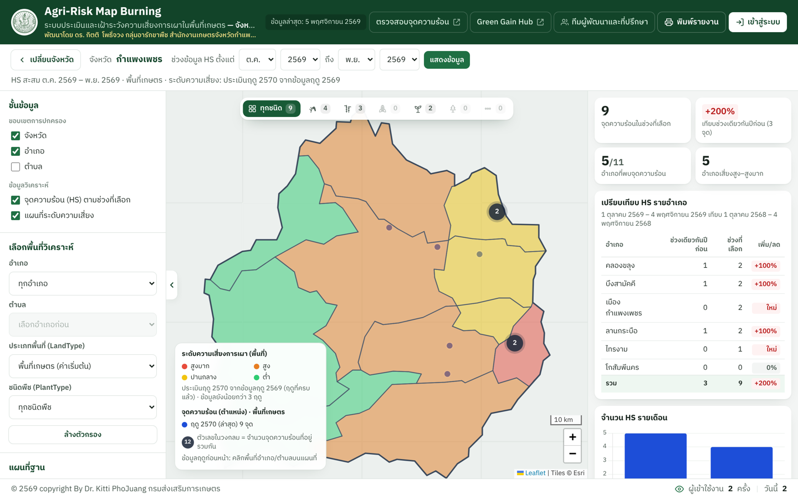
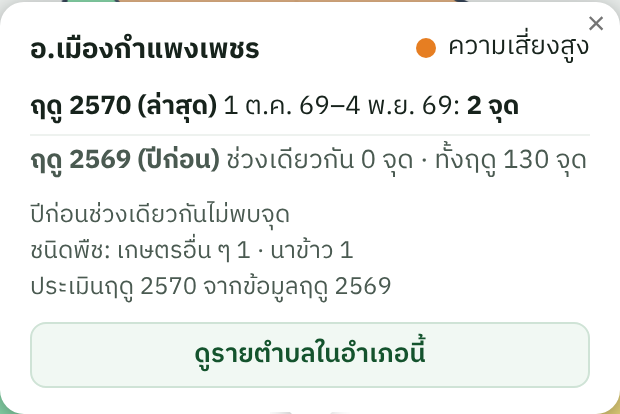
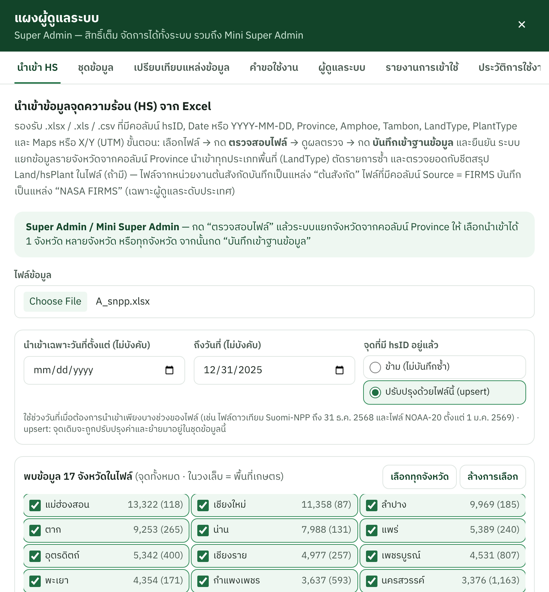
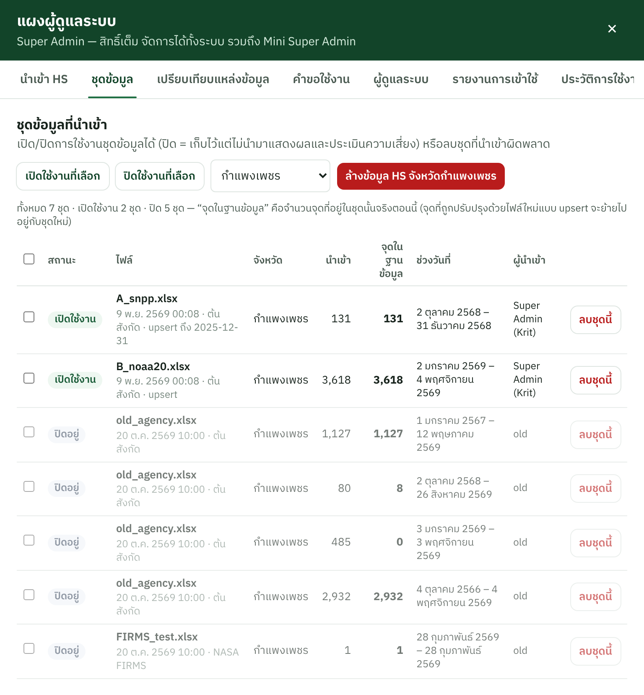
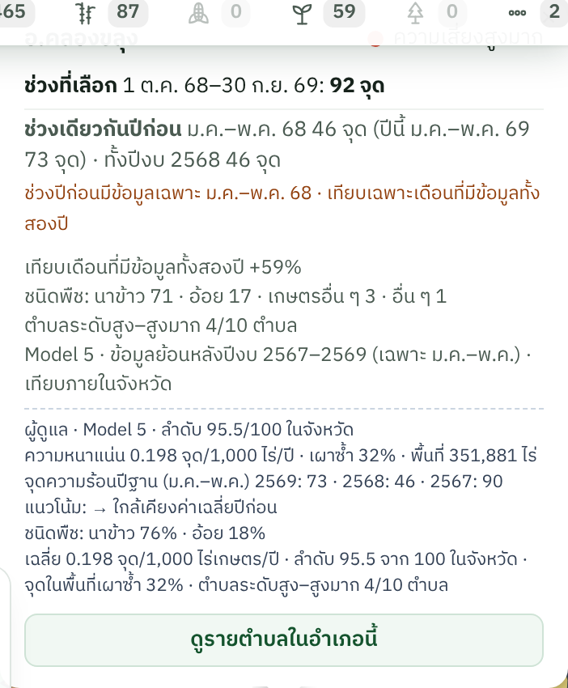

คู่มือการใช้งานและคู่มือวิชาการ
การใช้งาน · ฐานข้อมูลจุดความร้อน · ที่มาของสูตร Model (BRI) · ค่าน้ำหนักคะแนน · ตัวอย่างการคำนวณ
| เว็บไซต์ | https://krit-pj.github.io/TH-Agri-Risk-Maps-Burning |
| ผู้พัฒนา | ดร. กิตติ โพธิ์จวง กลุ่มอารักขาพืช สำนักงานเกษตรจังหวัดกำแพงเพชร กรมส่งเสริมการเกษตร |
| ฉบับ | 11 พฤศจิกายน 2569 (Model 4 เกณฑ์กลาง เป็นค่าเริ่มต้น · เลือกสูตรได้ · Public Data API v1) |
สรุปสาระสำคัญ
| ประเด็น | สาระสำคัญ |
|---|---|
| ระบบทำอะไร | แสดงจุดความร้อน (HS) จากดาวเทียม VIIRS และประเมิน “โอกาสเกิดการเผา” รายอำเภอ/ตำบล 4 ระดับ เพื่อวางแผนเฝ้าระวังล่วงหน้า พร้อมรายงานพิมพ์ |
| ข้อมูล | ข้อมูลหน่วยงานต้นสังกัด: Suomi-NPP ถึง 31 ธ.ค. 2568 และ NOAA-20 ตั้งแต่ 1 ม.ค. 2569 ทุกประเภทพื้นที่ ตรวจยอดกับชีตสรุปของไฟล์และฐานข้อมูลครบทุกจังหวัด |
| สูตร (BRI) | BRI = ความหนาแน่นต่อพื้นที่ (Empirical Bayes) 60% + การเกิดซ้ำ 20% + ชนิดพืช 20% จากฤดูที่ครบแล้ว ≤ 3 ฤดู · ปัจจุบันมี 1 ฤดูจึงใช้ 80% + 20% · จัด 4 ระดับด้วยเปอร์เซ็นไทล์ 50/75/90 ของแต่ละจังหวัด (ฐานรายจังหวัด) |
| สูตรที่เลือกใช้ได้ | Super Admin / Mini Super Admin เลือกได้ครั้งละ 1 สูตร มีผลทั้งระบบ: Model 4 คะแนนจัดลำดับเฝ้าระวัง (ค่าเริ่มต้นตั้งแต่ 11 พ.ย. 2569) · Model 3 BRI เวอร์ชัน 2 · Model 1 ต้นแบบ — หัวข้อ 4.3–4.4 |
| ข้อสรุปเชิงวิชาการ | คงโครงสร้าง BRI แต่เปลี่ยนฐานจาก “ช่วงวันเดียวกัน” เป็น “ฤดูที่ครบแล้ว” เพราะทำนายฤดูถัดไปได้แม่นกว่ามาก และใช้ได้กับทุกประเภทพื้นที่ |
| Model 4 (ค่าเริ่มต้น) | คะแนน 0–100 ระดับตำบล = เปอร์เซ็นไทล์ของความหนาแน่นการตรวจพบไฟเกษตร (กริด 500 ม.–วัน, NASA FIRMS Suomi-NPP) ต่อพื้นที่เพาะปลูก เทียบเกณฑ์กลางที่ตรึงไว้เดียวกันทุกจังหวัด · ทดสอบฤดู 2569: ตำบลระดับสูง–สูงมาก (30% ของพื้นที่เกษตร) ครอบคลุมหน่วยตรวจพบฤดูถัดไป 60% — หัวข้อ 4.4, 6.3, 7.3 |
| ผลตัวอย่าง (กำแพงเพชร) | Model 4 ฤดู 2570: ตำบลคะแนนสูงสุด ต.เกาะตาล 94.6 · ต.ท่ามะเขือ 92.3 · ต.เทพนคร 90.7 · อ.บึงสามัคคีมีตำบลระดับสูง 1/4 (ต.เทพนิมิต 86.5) — Model 3 (ฐานรายจังหวัด) จัด อ.บึงสามัคคี “สูงมาก” (หัวข้อ 7.2) |
| API สำหรับระบบอื่น | ข้อมูลระดับความเสี่ยงและจุดความร้อนแบบ JSON/CSV เป็นปัจจุบันเสมอ — หัวข้อ 8 และ docs/API.md |
| การนำไปใช้ | จัดลำดับพื้นที่เฝ้าระวัง → ดูตำบลและช่วงเดือนที่พบจุดบ่อย → รณรงค์/ส่งเสริมทางเลือกแทนการเผาก่อนช่วงพีค → ติดตามสัญญาณฤดูปัจจุบัน (ผู้ดูแล) |
| ข้อจำกัด | ข้อมูลยังมี 1 ฤดูที่ครบ · ช่วง ต.ค.–ธ.ค. 2568 ต่างดาวเทียม · จุดความร้อนไม่ใช่การเผาทุกครั้ง · ระดับเป็นค่าสัมพัทธ์ระหว่างพื้นที่ |
ระบบนี้ใช้ จุดความร้อน (Hotspot, HS) จากดาวเทียมระบบ VIIRS ซึ่งหน่วยงานต้นสังกัดจัดทำเป็นรายงานจำแนกตามพื้นที่รับผิดชอบ (LandType) และชนิดพืช (PlantType) เพื่อ (1) แสดงตำแหน่งจุดความร้อนตามช่วงเวลา (2) ประเมิน ระดับความเสี่ยงการเผา รายอำเภอ/ตำบล 4 ระดับ สำหรับวางแผนเฝ้าระวังล่วงหน้า และ (3) จัดทำรายงานพิมพ์ A4
| ช่วงวันที่ | ไฟล์ต้นทาง | ดาวเทียม | ทุกประเภทพื้นที่ | พื้นที่เกษตร |
|---|---|---|---|---|
| ถึง 31 ธ.ค. 2568 (เริ่ม 2 ต.ค. 2568) | 2026-9-3 HS2026 | Suomi-NPP (VIIRS) | 3,197 | 1,610 |
| ตั้งแต่ 1 ม.ค. 2569 (ถึง 5 พ.ย. 2569) | HS_NOAA-20 2026-11-8 | NOAA-20 (VIIRS) | 94,223 | 5,374 |
| รวม 17 จังหวัดภาคเหนือ | 97,420 | 6,984 | ||
| ประเภทพื้นที่ (LandType) | จำนวนจุด | หมายเหตุ |
|---|---|---|
| พื้นที่เกษตร (ค่าเริ่มต้นของระบบ) | 6,984 | ใช้คะแนนชนิดพืช (C) ในสูตร |
| เขต สปก. | 4,608 | |
| ป่าอนุรักษ์ | 47,599 | ไม่ใช้คะแนนชนิดพืช |
| ป่าสงวนแห่งชาติ | 35,023 | |
| ชุมชนและอื่น ๆ | 2,946 | |
| พื้นที่ริมทางหลวง | 260 |
hsID จากต้นทาง ระบบตัดรายการซ้ำด้วย hsID ข้อมูลจึง “ต่อกันตามวันที่” โดยไม่นับซ้ำ

| บทบาท | การเข้าสู่ระบบ | ขอบเขต |
|---|---|---|
| Admin (ระดับจังหวัด) | เบอร์โทรศัพท์ที่ได้รับอนุมัติ | นำเข้า/จัดการชุดข้อมูลและดูคะแนนเฉพาะจังหวัดตนเอง |
| Mini Super Admin | เบอร์โทรศัพท์ | ทุกจังหวัด รวมนำเข้าหลายจังหวัด ตั้งค่าระบบ (ยกเว้นจัดการ Mini Super Admin) |
| Super Admin | ชื่อผู้ใช้/รหัสผ่าน | สิทธิ์เต็ม |


auto แนะนำ)
เป้าหมาย ประเมินและจัดลำดับพื้นที่ (อำเภอ/ตำบล) ที่คาดว่าจะมีการเผาในฤดูปัจจุบัน เพื่อจัดสรรกำลังเฝ้าระวังและรณรงค์ล่วงหน้า ด้วยวิธีที่โปร่งใส ตรวจสอบย้อนหลังได้ และอธิบายต่อผู้ใช้ได้
| องค์ประกอบ | นิยามและวิธีคำนวณ |
|---|---|
| D ความหนาแน่น | oi = จำนวนจุดถ่วงฤดู (ฤดูล่าสุด 0.40 · ก่อนหน้า 0.35 · ก่อนนั้น 0.25 ปรับสัดส่วนเมื่อมีน้อยกว่า 3 ฤดู) · Ei = พื้นที่ (แสนไร่) · อัตราดิบ ri = oi/Ei EB: μ = Σo/ΣE, s² = Σ Ei(ri−μ)²/ΣE − μ/Ē, Bi = μ/(μ + s²Ei), Ri = Biμ + (1−Bi)ri D = เปอร์เซ็นไทล์ของ Ri ในการแจกแจงอัตรา EB รายฤดูของฤดูอ้างอิง (ทุกอำเภอ/ตำบลของจังหวัดนั้น) |
| P การเกิดซ้ำ | ร้อยละของฤดูในฐานการประเมินที่พบจุดความร้อน (ใช้เมื่อมีอย่างน้อย 2 ฤดู) |
| C ชนิดพืช | ค่าเฉลี่ยคะแนนชนิดพืชของจุดในฤดูฐาน: ข้าวโพดและไร่หมุนเวียน 90 · อ้อย 80 · นาข้าว 70 · เกษตรอื่น ๆ 55 · พื้นที่ป่า 50 · อื่น ๆ 45 แล้วปรับเป็น 0–100 ด้วย C = (ค่าเฉลี่ย − 45)/45 × 100 (ใช้เฉพาะพื้นที่เกษตรและเขต สปก.) |
หน่วยที่ไม่พบจุดในฤดูฐานเลยมี BRI = 0 (ระดับต่ำ) · คำนวณที่ Backend รายจังหวัด ใช้แหล่งข้อมูลหลักเดียวและเฉพาะชุดข้อมูลที่เปิดใช้งาน
Super Admin / Mini Super Admin เลือกที่แผงผู้ดูแล → ตั้งค่าระบบ → สูตรประเมินความเสี่ยง มีผลกับผู้ใช้ทุกคน ระบบบันทึกประวัติการเปลี่ยน และแสดงชื่อสูตรที่ใช้ในคำอธิบายแผนที่ ป๊อปอัปพื้นที่ และรายงานพิมพ์ ทุกสูตรคำนวณจากข้อมูลของแต่ละพื้นที่ — ตารางนี้เทียบ Model 3 กับ Model 1 ส่วน Model 4 (ค่าเริ่มต้น) อธิบายในหัวข้อ 4.4
| Model 3: BRI เวอร์ชัน 2 | Model 1: ต้นแบบ (V3 แรก – 5 พ.ย. 2569) | |
|---|---|---|
| ข้อมูลที่ใช้ | ฤดูที่ครบแล้ว ทั้งฤดู ≤ 3 ฤดู (ไม่ขึ้นกับช่วงที่ผู้ใช้เลือก) | จุดความร้อนในช่วงเวลาและชนิดพืชที่ผู้ใช้เลือก |
| สูตร | BRI = D·ความหนาแน่น EB + P·การเกิดซ้ำ + C·ชนิดพืช (น้ำหนักตามหัวข้อ 5.1) | 1 ฤดู: เกณฑ์จำนวนจุด 1–2 ต่ำ · 3–5 ปานกลาง · 6–10 สูง · >10 สูงมาก (ปรับภายในช่วงด้วยชนิดพืช/ขนาดพื้นที่) ≥ 2 ฤดู: Model A = 0.40·HS ถ่วงฤดู (0.40/0.35/0.25/0.15/0.10 เทียบค่าสูงสุดในจังหวัด) + 0.20·แนวโน้ม + 0.20·ชนิดพืช + 0.20·ขนาดพื้นที่ |
| การจัดระดับ | จุดตัด P50/P75/P90 ของ BRI ในจังหวัด | คะแนน 25 / 50 / 75 |
| คำนวณที่ | Backend (แคชและคำนวณล่วงหน้า) | หน้าเว็บ (ทันทีตามตัวกรอง) |
| ผลทดสอบทำนายฤดูถัดไป | ρ 0.94–0.95 · AUC 0.97–0.98 (ระดับอำเภอ) | ρ 0.53–0.56 (Model A) |
| จุดเด่น | ปรับขนาดพื้นที่ด้วยความหนาแน่น เสถียร ไม่เปลี่ยนตามช่วงที่ผู้ใช้เลือก ใช้ได้ทุกประเภทพื้นที่ | เข้าใจง่าย ตอบสนองต่อช่วงเวลาที่เลือก ใช้เปรียบเทียบกับผลเดิมได้ |
| ข้อจำกัด | ข้อมูลยังมี 1 ฤดูที่ครบ | ให้คะแนนเพิ่มกับพื้นที่ใหญ่ (ไม่ใช่ความหนาแน่น) · ผลเปลี่ยนตามช่วงที่เลือก · เกณฑ์จำนวนจุดตายตัว |
พัฒนาตามข้อกำหนด “คะแนนที่เข้าใจง่าย ตรวจสอบที่มาได้ และใช้เกณฑ์กลางเดียวกันทุกจังหวัด” แล้วทดสอบกับข้อมูลจริง (หัวข้อ 6.3) ก่อนตั้งเป็นค่าเริ่มต้น
| องค์ประกอบ | นิยาม / แหล่งข้อมูล |
|---|---|
| หน่วยตรวจพบ Ni,s | จำนวน “กริด 500 ม.–วัน” ที่พบจุดความร้อนเกษตรในตำบล i ฤดู s (หลายจุดในกริดเดียวกันวันเดียวกันนับ 1) จาก NASA FIRMS VIIRS ดาวเทียม Suomi-NPP ดวงเดียว ครบทุกเดือน — ไม่ผสมดาวเทียม (อัตราส่วน NOAA-20/S-NPP ต่างกันทุกปี 0.68–0.85) |
| พื้นที่เกษตร Ai | พื้นที่เพาะปลูก (ไร่) จาก ESA WorldCover 2021 คลาส Cropland (Zanaga et al., 2022) — ตัวหารเป็นพื้นที่เกษตร ไม่ใช่พื้นที่ตำบลทั้งหมด |
| ฤดูฐาน ws | ฤดูที่ครบแล้วล่าสุด ≤ 3 ฤดู น้ำหนัก 0.40/0.35/0.25 (ใหม่ → เก่า) ปัจจุบันใช้ฤดู 2567–2569 |
| Hi (หน่วย) | หน่วยตรวจพบต่อ 1,000 ไร่เกษตรต่อฤดู ปรับให้นิ่งด้วย Empirical Bayes ด้วยค่ากลางที่ตรึงไว้ μ = 0.2552, s² = 0.0913 (ตำบลเกษตรน้อยถูกดึงเข้าหาค่ากลางมากกว่า) |
| คะแนน 0–100 | เปอร์เซ็นไทล์ของ H เทียบการแจกแจงฐานกลาง (1,543 ตำบล × ฤดู 2567–2568, 17 จังหวัด) ที่ตรึงไว้ในเวอร์ชัน M4-2569.1 · ไม่พบการตรวจพบในฤดูฐานเลย = 0 |
| ระดับ | ต่ำ < 50 ≤ ปานกลาง < 75 ≤ สูง < 90 ≤ สูงมาก (ลำดับเทียบฐานกลาง เกณฑ์เดียวกันทุกจังหวัด) · ไม่มีพื้นที่เพาะปลูก = “ไม่ประเมิน” (สีเทา) ไม่แสดงเป็นความเสี่ยงต่ำ |
| อำเภอ / จังหวัด | ค่าเฉลี่ยคะแนนตำบลถ่วงพื้นที่เกษตร Σ(Ai·คะแนนi)/ΣAi พร้อม จำนวนตำบลคะแนนสูง–สูงมาก และพื้นที่เกษตรในตำบลเหล่านั้น เพื่อไม่ให้ค่าเฉลี่ยกลบตำบลเสี่ยง |
| สัญญาณปัจจุบัน | จำนวนจุดฤดูปัจจุบันจากข้อมูลหน่วยงาน เทียบช่วงเดียวกันฤดูก่อน (แสดงแยก ไม่เปลี่ยนคะแนน) |
| ไม่รวมในรุ่นนี้ | เหตุผล |
|---|---|
| ชนิดพืช (C) | ไม่มีพื้นที่ปลูกรายพืชรายตำบล การใช้สัดส่วนชนิดพืชของจุด HS แทนไม่ถูกต้องตามหลัก และทดสอบแล้วทำให้ผลแย่ลง (หัวข้อ 6.3) |
| การจัดการเศษพืช (M) | ยังไม่มีข้อมูลมาตรฐานทุกพื้นที่ — ไม่เติมศูนย์ให้พื้นที่ที่ไม่ได้สำรวจ |
| เชื้อเพลิงคงเหลือ (F) | ต้องมีสถานะภาคสนามรายตำบล — เสนอทดลองในพื้นที่นำร่องก่อน หากนำมาใช้จะแสดงเป็น “พื้นที่พร้อมเผาคงเหลือ (ไร่)” แยกจากคะแนน |
ใช้กับประเภทพื้นที่ “พื้นที่เกษตร” และ “เขต สปก.” ของ 17 จังหวัดที่มีข้อมูลพื้นที่เพาะปลูก (คะแนนเป็นของพื้นที่เกษตรทั้งตำบล ไม่แยก LandType) ประเภทพื้นที่อื่นระบบใช้ Model 3 และแจ้งบนแผนที่ · ทบทวนค่าฐานกลางหลังจบฤดูพร้อมเลขเวอร์ชันใหม่ · คะแนนไม่ใช่ความน่าจะเป็นการเผา (OECD/JRC, 2008)
| ประเภทพื้นที่ | k ≥ 2 ฤดู | k = 1 ฤดู (สถานะปัจจุบัน) | k = 0 |
|---|---|---|---|
| พื้นที่เกษตร, เขต สปก. | D 0.60 · P 0.20 · C 0.20 | D 0.80 · C 0.20 | ยังไม่จัดระดับ (แจ้งข้อความ) ผู้ดูแลยังเห็นสัญญาณเฝ้าระวัง |
| ป่าอนุรักษ์ ป่าสงวนฯ ชุมชนฯ ริมทางหลวง และ “ทุกประเภทพื้นที่” | D 0.75 · P 0.25 | D 1.00 |
เหตุผล D เป็นตัวแปรที่ทำนายได้ดีที่สุดจึงมีน้ำหนักมากที่สุด · P ต้องมีหลายฤดูจึงมีความหมาย (ฤดูเดียวมีค่าได้เพียง 0 หรือ 100 ซ้ำกับ D) · C เพิ่มข้อมูลเชิงพฤติกรรมของระบบพืช (ข้าวโพด/อ้อยมักเผาเพื่อเก็บเกี่ยว/เตรียมดิน) เล็กน้อยแต่สม่ำเสมอ ส่วนพื้นที่ป่าชนิดพืชไม่สะท้อนพฤติกรรมการเผา จึงไม่ใช้ C · น้ำหนักฤดู 0.40/0.35/0.25 ให้ฤดูล่าสุดสำคัญที่สุดแต่ยังลดความผันผวนรายปี
| ระดับ | เงื่อนไข | ความหมาย | คะแนนแสดงผล |
|---|---|---|---|
| สูงมาก | BRI ≥ P90 | กลุ่ม 10% ที่เสี่ยงที่สุดของจังหวัด | 75–100 |
| สูง | P75 ≤ BRI < P90 | กลุ่ม 25% ที่เสี่ยงที่สุดของจังหวัด | 50–74.9 |
| ปานกลาง | P50 ≤ BRI < P75 | เสี่ยงกว่าครึ่งหนึ่งของพื้นที่ | 25–49.9 |
| ต่ำ | BRI < P50 หรือไม่พบจุด | ครึ่งล่างของพื้นที่ | 0–24.9 |
P50/P75/P90 = เปอร์เซ็นไทล์ของ BRI ในฤดูอ้างอิง คำนวณแยกระดับอำเภอและตำบล ค่าตั้ง auto (แนะนำ) ใช้ฤดูฐานการประเมินเป็นฤดูอ้างอิง หากระบุปี (เช่น 2569,2570) ระบบใช้เฉพาะฤดูที่มีข้อมูลครบทั้งฤดู คะแนนแสดงผล (เฉพาะผู้ดูแล) แปลง BRI แบบเชิงเส้นเป็นช่วงละ 25 คะแนนตามจุดตัด
จำนวนจุดฤดูปัจจุบันตั้งแต่ 1 ต.ค. ถึงวันที่เลือก (cur) เทียบช่วงเดียวกันของฤดูก่อน (prev): ↑ เมื่อ log₂((cur+3)/(prev+3)) > 0.32 (ราว +25%) และ cur − prev ≥ 3 · ↓ ในทางกลับกัน · → ใกล้เคียง ค่า +3 ช่วยไม่ให้พื้นที่จุดน้อยแกว่งมาก
| การทดสอบ | ข้อมูล | ผล (ระดับอำเภอ) | ข้อสรุป |
|---|---|---|---|
| ฤดูที่ครบแล้วทำนายฤดูถัดไปทั้งฤดู | NASA FIRMS พื้นที่เกษตร 17 จังหวัด ฤดู 2566–2569 | Spearman ρ 0.94–0.95 · AUC 0.97–0.98 | ฐานการประเมินจากฤดูที่ครบแล้วแม่นยำสูงมาก |
| ข้อมูลต้นฤดู (ต.ค.–พ.ย.) ทำนายช่วงพีค | ฐานข้อมูลใหม่ ฤดู 2569 พื้นที่เกษตร | ρ 0.54–0.64 · AUC 0.82–0.86 (ตำบล AUC 0.71–0.75) | ใช้ได้เพียงเป็นสัญญาณ ไม่ควรเป็นฐานระดับความเสี่ยง |
| ข้อมูลต้นฤดูทำนายช่วงพีค | ฐานข้อมูลใหม่ ทุกประเภทพื้นที่ | สหสัมพันธ์เป็นลบ | ไฟป่าเกิดช่วงปลายฤดู สูตรเดิม (ช่วงวันเดียวกัน) ใช้ไม่ได้กับพื้นที่ป่า |
| เปรียบเทียบองค์ประกอบ | ฐานข้อมูลใหม่ พื้นที่เกษตร | D ≈ 0.8D+0.2C > การนับจำนวนจุดอย่างเดียว | คง D เป็นหลัก และใช้ C เสริม |
AUC = พื้นที่ใต้เส้นโค้ง ROC ในการแยกพื้นที่ที่จะอยู่กลุ่ม 25% ที่มีจุดมากที่สุดในฤดูเป้าหมาย (Fawcett, 2006) · ρ = สหสัมพันธ์อันดับของ Spearman
ผลคือระดับความเสี่ยงของฤดู 2570 ประเมินจากฤดู 2569 ทั้งฤดู (k = 1) และระบบจะเปลี่ยนเป็นน้ำหนัก D 0.60 · P 0.20 · C 0.20 อัตโนมัติเมื่อฤดู 2570 ครบ (1 ต.ค. 2570)
ตัวชี้วัด: เลือกตำบลคะแนนสูงสุดจนได้พื้นที่เกษตร 10% / 20% ของทั้งหมด (งบพื้นที่เท่ากัน) แล้วนับสัดส่วนหน่วยตรวจพบของฤดูทดสอบที่อยู่ในตำบลเหล่านั้น — เป็น “ความสามารถจัดลำดับการตรวจพบไฟ” ไม่ใช่การยืนยันการเผาจริงทุกเหตุการณ์ (เทียบ Chainey et al., 2008)
| วิธีจัดลำดับ (1,546 ตำบล 17 จังหวัด) | S-NPP 10% | S-NPP 20% | NOAA-20 10% | NOAA-20 20% |
|---|---|---|---|---|
| จำนวนจุด (baseline) | 23.0% | 40.9% | 23.0% | 40.1% |
| ความหนาแน่นต่อพื้นที่ตำบลทั้งหมด (แบบ Model 3) | 25.0% | 43.3% | 27.1% | 44.8% |
| ความหนาแน่นต่อพื้นที่เกษตร + เกณฑ์กลาง (Model 4) | 29.4% | 45.8% | 28.8% | 47.7% |
| ความหนาแน่นต่อพื้นที่เกษตร แต่จัดลำดับรายจังหวัด | 23.6% | 41.5% | 24.6% | 42.5% |
| Model 4 + ชนิดพืชจาก HS น้ำหนัก 0.2 / 0.5 | 27.7% / 25.8% | 46.3% / 42.9% | 28.2% / 25.9% | 47.3% / 45.5% |
| ระดับ Model 4 (ชุดทดสอบ ฐานกลาง) | ตำบล | สัดส่วนพื้นที่เกษตร | สัดส่วนหน่วยตรวจพบฤดู 2569 |
|---|---|---|---|
| สูงมาก (≥ 90) | 134 | 10.8% | 31.0% |
| สูง (75–89.9) | 240 | 19.1% | 29.3% |
| ปานกลาง (50–74.9) | 498 | 33.9% | 32.0% |
| ต่ำ (< 50) | 671 | 36.2% | 7.7% |
| ไม่ประเมิน (ไม่มีพื้นที่เพาะปลูก) | 3 | 0% | 0% |
อำเภอเมืองกำแพงเพชร (รหัส 6201) พื้นที่เกษตร ประเมินฤดู 2570 ณ ข้อมูลล่าสุด 4 พ.ย. 2569 · ฐานการประเมิน = ฤดู 2569 (1 ฤดู) · น้ำหนัก D 0.80 · C 0.20 · ฐานรายจังหวัด (11 อำเภอของกำแพงเพชร)
| ขั้น | รายการ | ค่า |
|---|---|---|
| 1 | จุดความร้อนพื้นที่เกษตรฤดู 2569 ของอำเภอ (o) | 130 จุด |
| 2 | พื้นที่อำเภอ 922,661 ไร่ → E = 9.2266 แสนไร่ · อัตราดิบ r = 130/9.2266 | 14.09 จุด/แสนไร่ |
| 3 | ค่ารวม 11 อำเภอของจังหวัด: Σo = 551 จุด, ΣE = 53.25 แสนไร่ → μ = 10.35 · s² = 66.47 | |
| 4 | B = 10.35 / (10.35 + 66.47 × 9.2266) = 0.0166 → R = 0.0166×10.35 + 0.9834×14.09 (อำเภอใหญ่ จุดมาก จึงแทบไม่ถูกปรับ) | R = 14.03 |
| 5 | เปอร์เซ็นไทล์ของ R ในการแจกแจงอัตรา EB ของ 11 อำเภอ (อันดับ 5 จากบน) | D = 63.6 |
| 6 | คะแนนชนิดพืชเฉลี่ยของ 130 จุด = 70.3 → C = (70.3 − 45)/45 × 100 | C = 56.2 |
| 7 | BRI = 0.80 × 63.6 + 0.20 × 56.2 = 50.9 + 11.2 | BRI = 62.1* |
| 8 | จุดตัดระดับอำเภอของจังหวัด (auto = ฤดู 2569): P50 = 55.5 · P75 = 72.5 · P90 = 84.0 → 55.5 ≤ 62.1 < 72.5 | ระดับ “ปานกลาง” (คะแนนแสดงผล 34.8) |
| 9 | สัญญาณเฝ้าระวัง: 1 ต.ค.–4 พ.ย. 2569 พบ 2 จุด เทียบช่วงเดียวกันฤดูก่อน 0 จุด → log₂(5/3) = 0.74 แต่ต่างกันน้อยกว่า 3 จุด | → ใกล้เคียงเดิม |
* ระบบคำนวณจากค่าที่ไม่ปัดเศษได้ 62.2 ความต่างเล็กน้อยเกิดจากการปัดเศษในตาราง
| อำเภอ | HS ฤดู 2569 | D | C | BRI | Model 3 (ค่าเริ่มต้น) | Model 1 (ช่วง ต.ค. 68–ก.ย. 69) |
|---|---|---|---|---|---|---|
| บึงสามัคคี | 54 | 100.0 | 56.6 | 91.3 | สูงมาก | สูงมาก |
| คลองขลุง | 97 | 90.9 | 56.5 | 84.0 | สูงมาก | สูงมาก |
| พรานกระต่าย | 102 | 81.8 | 53.4 | 76.1 | สูง | สูงมาก |
| ขาณุวรลักษบุรี | 110 | 72.7 | 53.4 | 68.9 | ปานกลาง | สูงมาก |
| เมืองกำแพงเพชร | 130 | 63.6 | 56.2 | 62.2 | ปานกลาง | สูงมาก |
| ลานกระบือ | 23 | 54.5 | 59.4 | 55.5 | ปานกลาง | สูงมาก |
| ทรายทองวัฒนา | 11 | 45.5 | 49.5 | 46.3 | ต่ำ | สูงมาก |
| ไทรงาม | 15 | 36.4 | 54.8 | 40.1 | ต่ำ | สูงมาก |
| โกสัมพีนคร | 5 | 27.3 | 42.2 | 30.3 | ต่ำ | ปานกลาง |
| ปางศิลาทอง | 1 | 18.2 | 77.8 | 30.1 | ต่ำ | ต่ำ |
| คลองลาน | 3 | 9.1 | 22.2 | 11.7 | ต่ำ | ปานกลาง |
Model 1 ใช้เกณฑ์จำนวนจุดตายตัวเมื่อช่วงที่เลือกมี 1 ฤดู (เกิน 10 จุด = สูงมาก) จึงจัด 8 จาก 11 อำเภอเป็น “สูงมาก” แยกพื้นที่เสี่ยงมาก/น้อยไม่ได้ ส่วน Model 3 จัดลำดับด้วยความหนาแน่นต่อพื้นที่: บึงสามัคคีมีจุดน้อยกว่าเมืองกำแพงเพชร แต่พื้นที่เล็กกว่ามาก จึงหนาแน่นกว่า
| รายการ | บึงสามัคคี | เมืองกำแพงเพชร | จังหวัด (11 อำเภอ) |
|---|---|---|---|
| จุดความร้อนพื้นที่เกษตร ฤดู 2569 (o) | 54 | 130 | 551 |
| พื้นที่อำเภอ (ไร่) | 172,676 | 922,661 | 5,325,310 |
| อัตราดิบ r = o ÷ E (จุด/แสนไร่) | 31.27 | 14.09 | μ = 10.35 |
| น้ำหนักดึงเข้าหาค่าเฉลี่ย B = μ ÷ (μ + s²E) | 0.083 | 0.017 | s² = 66.47 |
| อัตรา EB: R = B·μ + (1−B)·r | 29.54 | 14.03 | – |
| อันดับในจังหวัด / เปอร์เซ็นไทล์ (= D) | 1 / 100 | 5 / 63.6 | – |
บึงสามัคคีมีจุดน้อยกว่าอำเภอเมืองฯ 2.4 เท่า แต่พื้นที่เล็กกว่า 5.3 เท่า การเผา “ต่อหน่วยพื้นที่” จึงเข้มข้นกว่า 2.2 เท่า ค่า B = 0.083 แสดงว่าการปรับ Empirical Bayes เปลี่ยนค่าไม่มาก (31.27 → 29.54) — ความหนาแน่นนี้มีจำนวนจุดรองรับเพียงพอ ไม่ใช่ค่าสูงเพราะพื้นที่เล็กหรือจุดน้อยโดยบังเอิญ (Clayton & Kaldor, 1987)
| ชนิดพืช | จุด | คะแนน |
|---|---|---|
| นาข้าว | 44 (81%) | 70 |
| อ้อย | 7 | 80 |
| เกษตรอื่น ๆ | 3 | 55 |
| เฉลี่ย → C = (70.5 − 45)/45 × 100 | C = 56.6 | |
| ตำบล | จุด |
|---|---|
| วังชะโอน | 23 |
| เทพนิมิต | 18 |
| บึงสามัคคี | 7 |
| ระหาน | 6 |
คะแนน 80.0 จาก 91.3 (88%) มาจากความหนาแน่น — ระดับนี้จึงตัดสินด้วยข้อมูลการเกิดจุดความร้อนจริงเป็นหลัก ส่วนพื้นฐานที่ใช้ฤดูที่แล้วทำนายฤดูนี้มาจากผลตรวจสอบย้อนหลังในหัวข้อ 6 (ρ 0.94–0.95, AUC 0.97–0.98 ระดับอำเภอ)
| ข้อควรระวัง | ข้อเสนอการใช้ผล |
|---|---|
| ข้อมูลมีเพียง 1 ฤดู ยังไม่ใช้องค์ประกอบการเกิดซ้ำ (P) | ทบทวนเมื่อฤดู 2570 ครบ หากยังหนาแน่นสูงจะยืนยันว่าเป็นพื้นที่เผาซ้ำ |
| 17 จุด (ต.ค.–ธ.ค. 2568) จาก Suomi-NPP อีก 37 จุดจาก NOAA-20 (VIIRS เหมือนกัน ความไวใกล้เคียงแต่ไม่เท่ากัน — Schroeder et al., 2014) | ใช้ดาวเทียมดวงเดียวต่อเนื่องในฤดูถัดไป |
| สัญญาณฤดู 2570: 1 ต.ค.–5 พ.ย. 2569 พบ 2 จุด เทียบช่วงเดียวกันฤดูก่อน 1 จุด → ใกล้เคียงเดิม | เตรียมรณรงค์/ส่งเสริมทางเลือกแทนการเผาตอซังก่อน ธ.ค. ใน ต.วังชะโอน และ ต.เทพนิมิต |
| จุดความร้อนไม่ใช่การเผาทุกครั้ง (ดาวเทียมผ่านราว 13:30 และ 01:30 น. เมฆบังหรือไฟเล็กอาจตรวจไม่พบ) | ใช้ร่วมกับการตรวจสอบภาคสนามและแอปตรวจสอบจุดความร้อน |
ผู้ดูแลระบบดูค่า BRI, D, P, C และจำนวนจุดฤดูฐานของทุกพื้นที่ได้ทันทีโดยคลิกพื้นที่บนแผนที่ (ภาพที่ 5)
| ขั้น | รายการ | ค่า |
|---|---|---|
| 1 | หน่วยตรวจพบ (กริด 500 ม.–วัน, Suomi-NPP) ฤดู 2569 / 2568 / 2567 | 17 / 13 / 10 |
| 2 | ถ่วงฤดู o = 0.40×17 + 0.35×13 + 0.25×10 | 13.85 หน่วย/ฤดู |
| 3 | พื้นที่เพาะปลูก 29,044 ไร่ → E = 29.044 (พันไร่) · อัตราดิบ r = 13.85 / 29.044 | 0.477 |
| 4 | B = μ/(μ + s²E) = 0.2552/(0.2552 + 0.0913×29.044) = 0.088 → H = 0.088×0.2552 + 0.912×0.477 | H = 0.457 (1.8 เท่าของค่ากลาง) |
| 5 | เปอร์เซ็นไทล์ของ 0.457 ในการแจกแจงฐานกลาง 17 จังหวัด | คะแนน 86.5 |
| 6 | 75 ≤ 86.5 < 90 | ระดับ “สูง” |
| 7 | เหตุผลหลักที่ระบบแสดง | หนาแน่น 0.457 หน่วย/1,000 ไร่เกษตร (1.8 เท่าของค่าฐานกลาง) · พบ 3/3 ฤดู |
ระดับอำเภอบึงสามัคคี (Model 4) ค่าเฉลี่ยถ่วงพื้นที่เกษตรของ 4 ตำบล = 65.3 → “ปานกลาง” โดยมีตำบลระดับสูง 1/4 ตำบล (ต.เทพนิมิต 29,044 ไร่เกษตร) — Model 4 จึงชี้เป้าเฝ้าระวังลงระดับตำบลชัดกว่า ขณะที่ Model 3 (ฐานรายจังหวัด) จัดทั้งอำเภอเป็น “สูงมาก” เพราะเทียบเฉพาะภายในจังหวัด
| ตำบลคะแนนสูงสุดของกำแพงเพชร (Model 4 ฤดู 2570) | พื้นที่เกษตร (ไร่) | หน่วย 2569/68/67 | H | คะแนน | ระดับ |
|---|---|---|---|---|---|
| ต.เกาะตาล อ.ขาณุวรลักษบุรี | 23,854 | 30/12/7 | 0.700 | 94.6 | สูงมาก |
| ต.ท่ามะเขือ อ.คลองขลุง | 22,097 | 14/15/15 | 0.615 | 92.3 | สูงมาก |
| ต.เทพนคร อ.เมืองกำแพงเพชร | 90,952 | 66/36/51 | 0.560 | 90.7 | สูงมาก |
| ต.วังยาง อ.คลองขลุง | 21,496 | 6/17/17 | 0.548 | 90.3 | สูงมาก |
| ต.คุยบ้านโอง อ.พรานกระต่าย | 30,434 | 21/18/9 | 0.532 | 89.8 | สูง |
ระบบมี Public Data API v1 แบบอ่านอย่างเดียว ข้อมูลเป็นปัจจุบันเสมอ (ล้างแคชทันทีเมื่อนำเข้า/เปิด-ปิดชุดข้อมูล/เปลี่ยนตั้งค่า) ใช้ได้กับเว็บอื่น Excel/Power Query Google Sheets (IMPORTDATA) Python และ R รายละเอียดเต็มอยู่ที่ docs/API.md ใน GitHub
| fn | คืนค่า | ตัวอย่าง (ต่อท้าย URL เว็บแอป …/exec?action=api) |
|---|---|---|
| meta | เวอร์ชัน สูตรที่ใช้งาน ช่วงข้อมูล รายการ endpoint | &fn=meta |
| provinces | จังหวัดที่มีข้อมูล | &fn=provinces&format=csv |
| risk | ระดับรายตำบล/อำเภอ (+ คะแนน เหตุผล เมื่อมี key) | &fn=risk&province=62&level=subdistrict&format=csv |
| hotspots | จุดความร้อนรายจุด | &fn=hotspots&province=62&from=2026-10-01 |
ไม่มี key: ระดับ 4 ระดับ + จำนวนจุดฤดูปัจจุบัน · มี key (ผู้ดูแลออกให้ด้วย createApiKey('ชื่อหน่วยงาน') ใน Apps Script Editor ทุกการออก/ยกเลิกบันทึกประวัติ): คะแนน 0–100, H, พื้นที่เกษตร, หน่วยตรวจพบรายฤดู และเหตุผล · ทุกผลลัพธ์ระบุสูตร เวอร์ชัน ฤดูฐาน และเวลาที่สร้าง